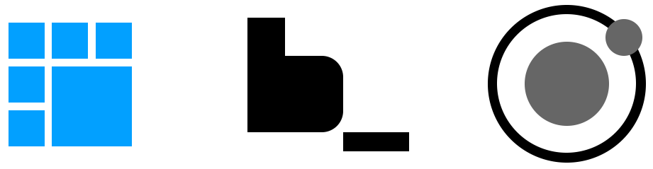

CSS Flow
Responsywność w oczach designera i developera
Co na prezentacji?
Co dostanę?
VideoTut BEM, Cheatsheet Flexbox, Pliki źródłowe
Zacznijmy od początku...
Responsywność
Atrakcyjny content na wszystkich możliwych widokach!
Uniwersalne założenia dla contentu i jego otoczenia
Realizacja responsywności
Używanie relatywnego przelicznika jednostek wielkości (em, rem, vw, vh, %, vmin, vmax)
Minimalizowanie stosowania wielkości absolutnych (px, pt, pc, in, mm, cm)
Metodologia
Responsive frameworks & Tools
Metodologia BEM
.block _element --modifier
Block
Samodzielny, znaczącący element strony.
Zarówno duże sekcje jak i mniejsze fragmenty, które mogą istnieć samodzielnie.
Block
.menu{}
.header{}
.content{}
.article{}
.heading{}
.form{}
.input{}
.footer{}
Element
Fragment bloku, który nie istenieje bez swojego rodzica.
Jest 100% zależny od bloku, w którym się znajduje.
Element
.header_logo{}
.menu_item{}
.footer_copyright{}
.form_row{}
Modifier
Flaga, która modyfikuje wygląd bądź zachowanie bloków/elementów.
Może być przypisywany do elementu jak i bezpośrednio do bloku.
Modifier
.header--fixed{}
.menu_item--highlighted{}
.heading--secondary{}
.input--disabled{}
.article--sticky{}
BEM to sposób nazewnictwa
Chodzi tylko o zestaw regół, czytelny i prosty w utrzymaniu kod HTML i CSS. BEM to sposob myślenia i uporządkowanego nazywania klas.
Głównym celem BEM jest uniknięcie specyficzności i rozwiązanie dziedziczenia selektorów CSS. Im krótsze dziedziczenie tym lepiej!
Zalety korzystania z BEM
Modularność.
Reużywalność.
Przejrzysta struktura.
Modularność.
Style bloków nie mieszają się ze sobą.
Brak problemów związanych z kaskadowością styli.
Możliwość wykorzystania całych bloków w innych projektach.
Separacja styli od znaczników
Rozwiązanie problemu dziedziczenia selektorów HTML i pochodności
Reużywalność.
Przy dobrym rozplanowaniu bloków na stronie i wykorzystywaniu tych samych bloków w kilku miejscach znacząco zmniejszamy ilość pisanego kodu.
Z wykorzystaniem dodatkowych narzędzi takich jak KSS możemy tworzyć w pełni zautomatyzowane guideline'y.
To podejście nazywamy
Style Guide Driven Development.
Przejrzysta struktura.
Dzięki metodologii BEM tworzymy kod o solidnej strukturze. Wdrożenie nowej osoby w kod jest mniej czasochłonne.

Założenia BEM
Nie pracujemy na nazwach identyfikatorów
Blok musi być rodzicem elementu
Konwencje nazewnicze
blok to element, który może istnieć samodzielnie
element jest zawsze zależny od swojego bloku
modyfikator jest zawsze poprzedzony nazwą elementu
możemy zagnieżdżać element w elemencie
możemy zagnieżdżać blok w bloku
jeżeli element będzie reużywalny to level'ujemy go i tworzymy z niego blok
Inne metodologie CSS
SMACSS
OOCSS
SUITCSS
Atomic
Inne sposoby na tworzenie dobrego kodu
Dbanie o atrakcyjny wygląd na wszystkich możliwych widokach (nie progach)!
Uniwersalne założenia dla kontenera i jego całego otoczenia
Zamykanie custom'owych styli elementów w unikalnych blokach
Pamiętaj, że każda metodologia jest lepsza niż żadna.
Metodologia Atomic Design
Semantyczność i wspólny język z programistą
Atomic Design to design system oparty na podejściu komponentowym (Component Based Design).
Projektowanie komponentowe ułatwia:
utrzymanie typografii, kolorystyki, identyfikacji wizualnej marki, spójności designu w równoległych produktach, późniejsze zmiany rozwojowe i utrzymaniowe oraz konsekwencję w stosowaniu styli.
Atoms › Molecules › Organisms › Templates › Pages
Live demo
#letsCode!
Konkurs!
Do wygrania za free!
Bezpłatny hosting na CAŁY ROK!

Dzięki za prezentację!